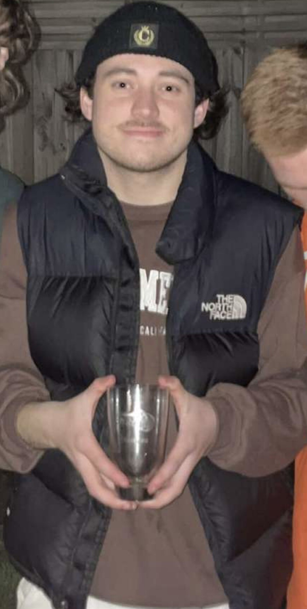
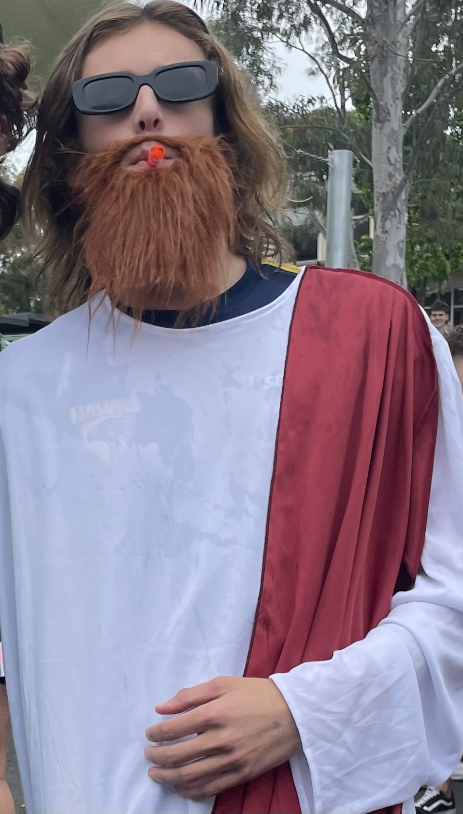
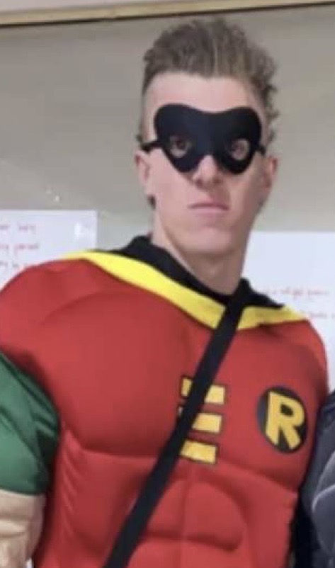
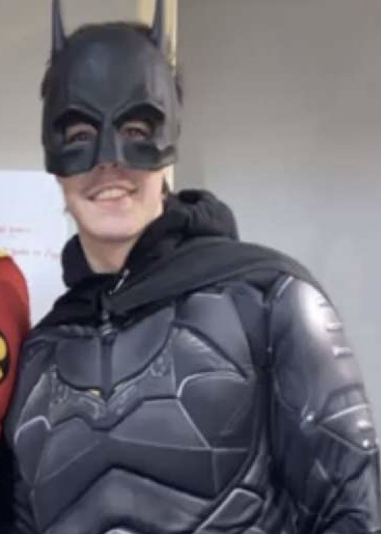

BRAYDEN ALEXANDER  Part time fill in, Full time coach Brayden is a well-respected basketball head coach with an impressive track record of success. Known for his strategic approach to the game, Brayden has a reputation for developing strong, disciplined teams that consistently perform at a high level. His passion for the game is contagious, and he is able to inspire and motivate his players to push themselves to their limits. With years of experience under his belt, Brayden has a deep understanding of the intricacies of the sport, and he is able to adapt his coaching style to meet the unique needs of each player. His commitment to excellence and his ability to bring out the best in his team has earned him the respect of his peers and the admiration of his players.
ASSISTANT COACH
DYLAN MOORE 
The Association has recently welcomed a new assistant coach, past player Dylan, forced into early retirment, he is bringing in a fresh perspective and a wealth of experience to the program. With years of coaching at both the collegiate and professional levels, Dylan has quickly made an impact on the team, offering up new strategies and techniques to help improve player performance. Dylans coomintment to player development and attention to detail has not gone unnoticed, and they have quickly earned the respect and admiration of both players and fellow coaches. This Association is excited to have such a talented and committed individual on board, and they are looking forward to seeing the positive impact that the new coach will have on the program.
DEFENSE COACH
JAI STEELE 
Jai is a highly respected basketball defensive coach with a wealth of knowledge and experience in the game. He has spent many years working with players at all levels, from amateur to professional, and has developed a reputation as a skilled and dedicated coach who truly cares about his players. Jai is known for his ability to teach complex defensive strategies in a simple and understandable way, allowing players to quickly grasp and implement his teachings on the court. He has a strong emphasis on fundamentals, and instills a sense of discipline and work ethic in his players that translates into success on the court. With Jai being apart of our Association, players know they are getting the very best in defensive coaching and can feel confident in their abilities to shut down their opponents.
OFFENCE COACH
BRANDON STURDY 
Brandon is a highly respected basketball offense coach with a deep passion for the game. He has a proven track record of success, having coached teams to numerous championships at all levels of competition. Brandon is known for his innovative and creative offensive strategies that keep his opponents guessing, while also emphasizing strong fundamentals and teamwork. He has a keen eye for talent and is able to identify each player's unique strengths, allowing him to tailor his coaching approach to maximize their potential. Brandon is a skilled communicator and motivator, inspiring his players to give their all on the court and empowering them to take ownership of their roles on the team. With Brandon as their coach, players know they are receiving top-notch offensive coaching and are well-equipped to take on any opponent that comes their way.
Register your intrest in playing for the Association
are you what we are looking for? Register yout intrest below